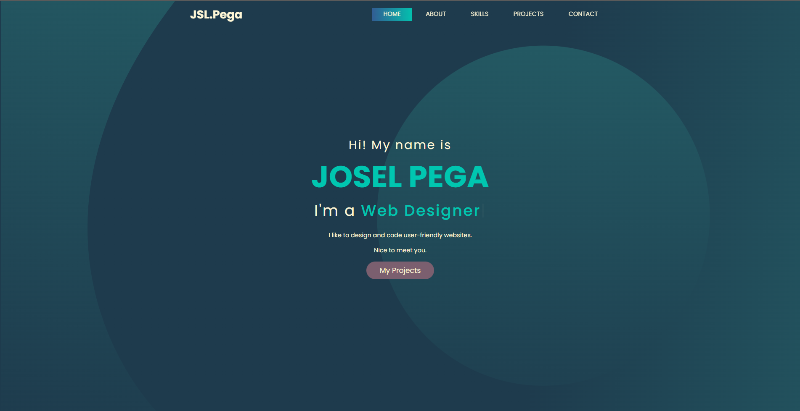

My Portfolio Website
During my on-the-job training, I was assigned a task unrelated to web development, so I created this portfolio when I had free time or after completing a task assigned to me to practice my skills.
Technologies Used: HTML, CSS, Bootstrap, Javascript/Jquery.